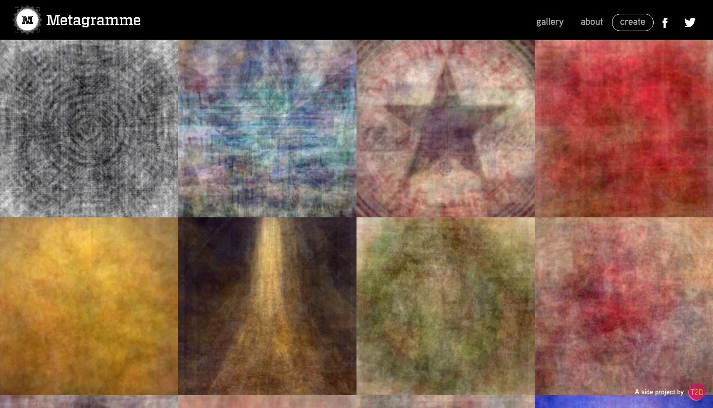
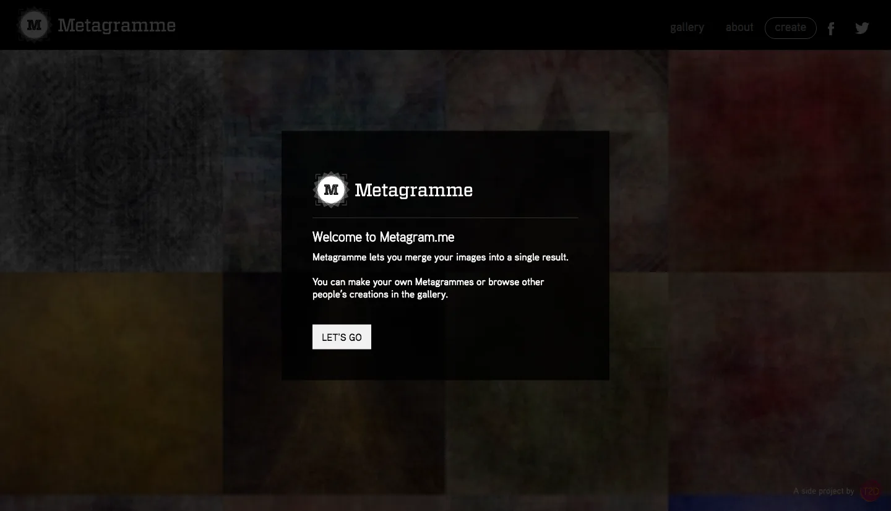
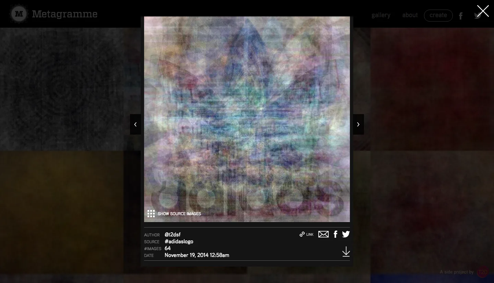
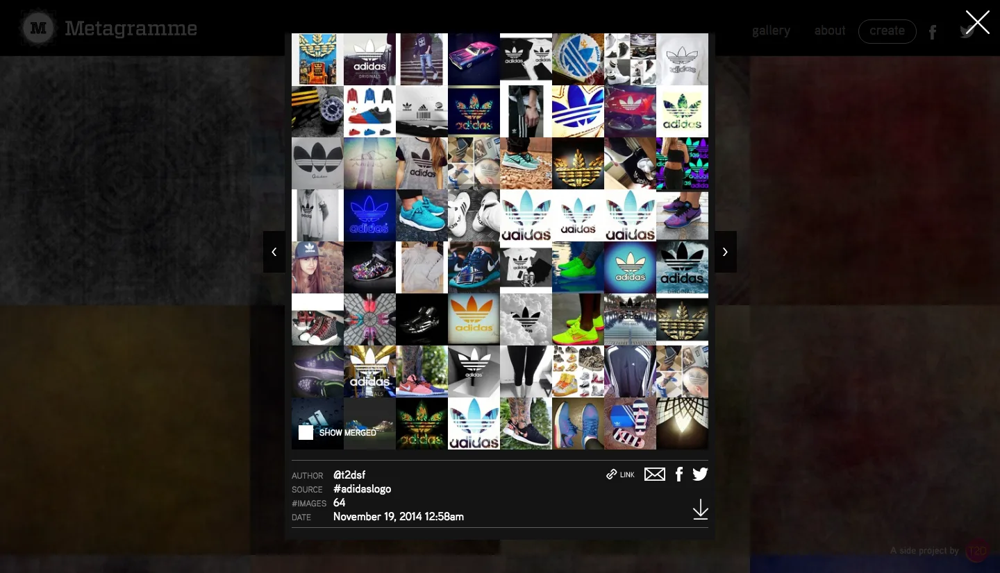
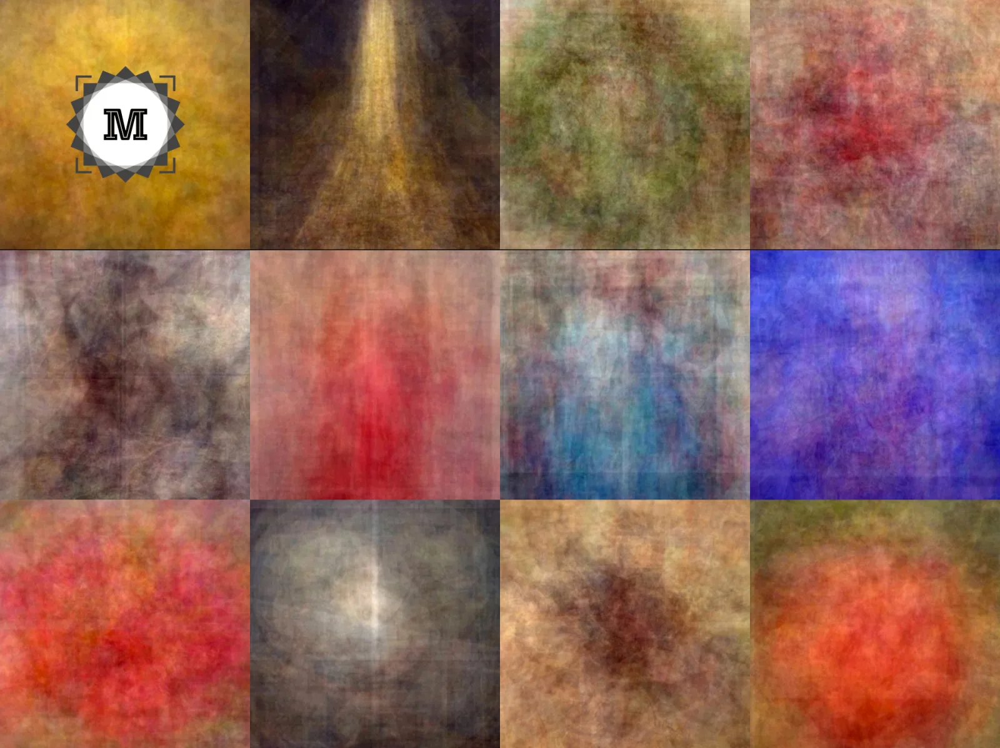
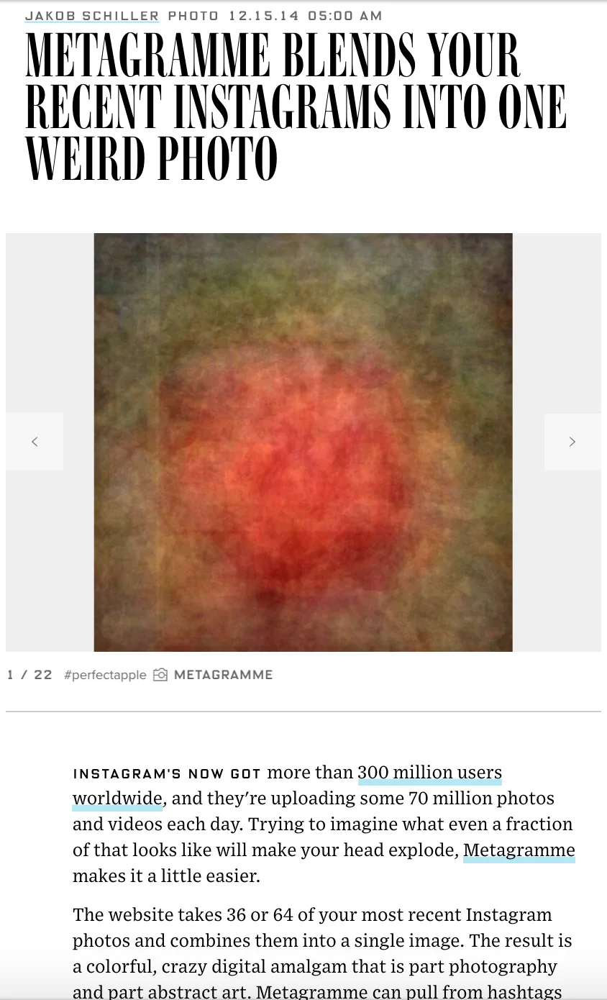

Metagramme
Internal project while at Martian. Mathematically averaging image results based on a hashtag, effectively creating a visual representation for what society thinks abstract terms like 'sadness' or 'love' looks like.
Featured in Gizmodo, Wired.





